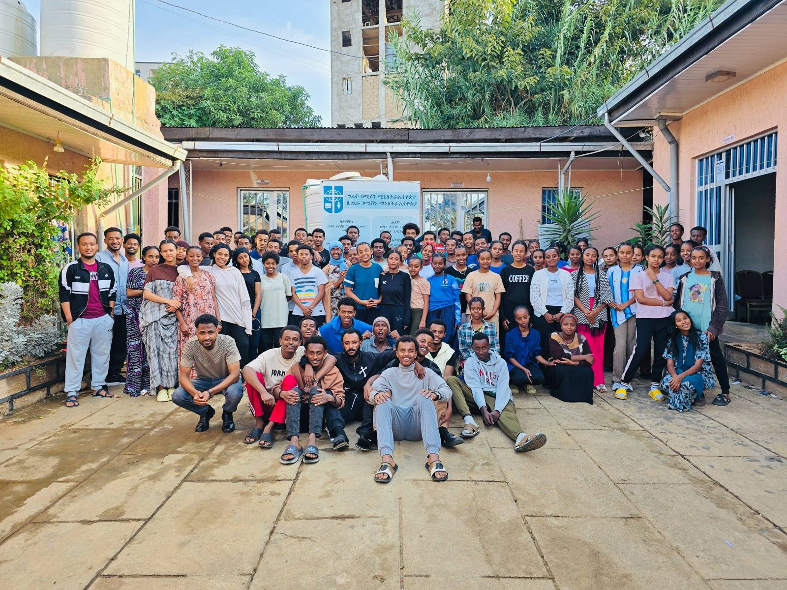
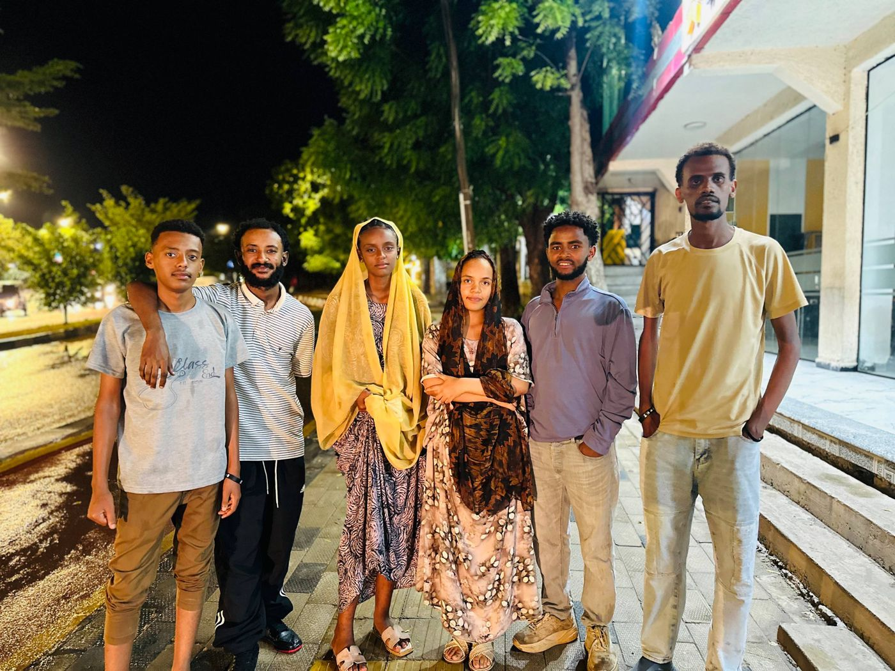
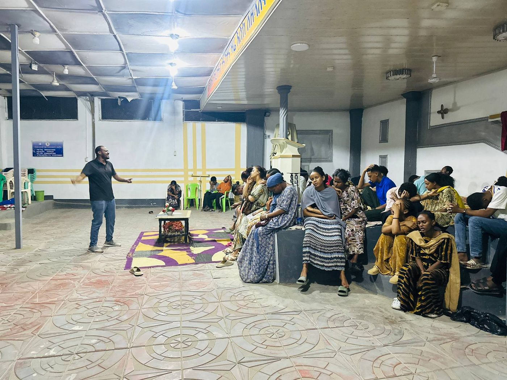
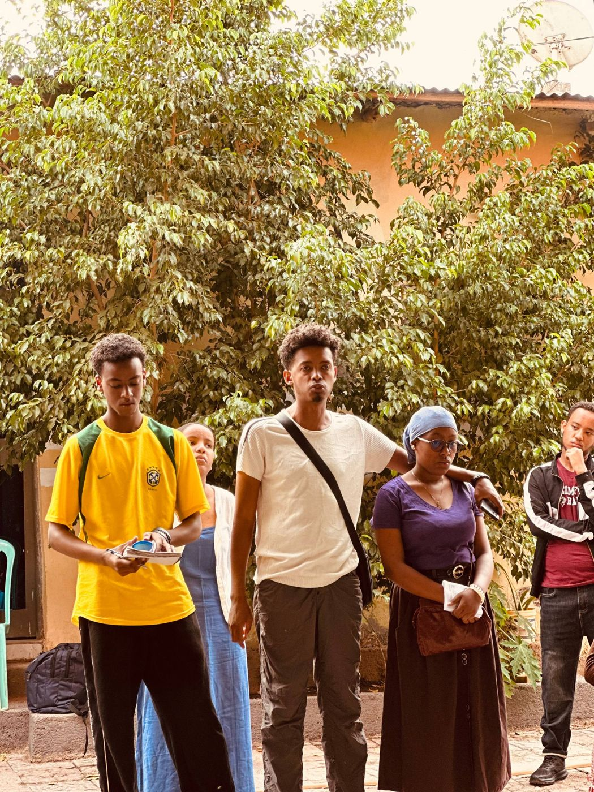
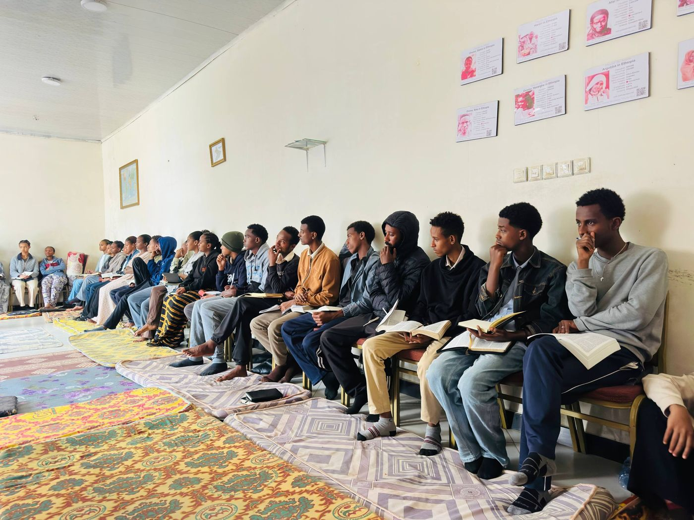

Study With Success
A program to encourage and support students in their academic studies.
Every Friday at schoolThroughout the school year, Harar High School Fellowship runs the following programs to help students grow spiritually, academically and in service.

A program to encourage and support students in their academic studies.
Every Friday at school
An opening program to welcome new and returning students into the fellowship.
Beginning of the year
A general gathering for teaching, worship and fellowship among all members.
Once a month, on Friday
A program that brings students together in small family groups for support and growth.
Ongoing
A dedicated week of prayer and mission during the first semester.
One week
A dedicated week of prayer and mission during the second semester.
One week
A short outreach and mission activity held regularly throughout the year.
Every month
A study program covering four books, completed with a certificate.
Certificate programA special send-off program for graduating Grade 12 students.
End of the yearA closing celebration and farewell for the fellowship at the end of the school year.
End of the yearA summer program combining a week of prayer and a week of mission.
One week prayer + one week mission